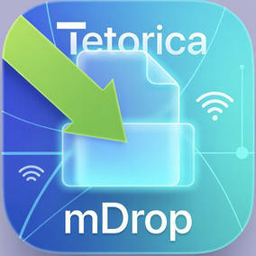

Tetorica mDrop
Local Network File Sharing Tool
No install on clients. No cloud. Just drag, drop, and share.
Features
- Drag & Drop file sharing
- Click to select files
- Accessible from any browser
- Bonjour / mDNS automatic discovery
- Works on iPhone, iPad, Windows, and Mac
- Fast local network transfer
Quick Start
- Launch the app and click Start Server.
- Click Start Bonjour.
- Open this URL on any device connected to the same Wi-Fi:
http://tetorica-drop.local:7878/
Or use:
http://<your-ip-address>:7878/
How It Works
Drop a file on your Mac, open the URL on your phone or another device, then select the file and download it.
No accounts, no uploads, no cloud.
Why Tetorica mDrop?
Simpler than SMB
- No permissions or credentials
- No OS-specific setup
- No path configuration
Faster than Cloud
- No internet required
- Runs entirely within your local network
Perfect for training sessions and events
- Easy distribution to multiple participants
- No setup on client devices
- Minimal troubleshooting
Limitations
- Performance depends on local network conditions
- Large files and many simultaneous downloads may slow down
- Currently single-node distribution, not P2P yet
Tech Stack
- Tauri
- Axum
- Tokio
- Tailwind CSS
- Bonjour / mDNS